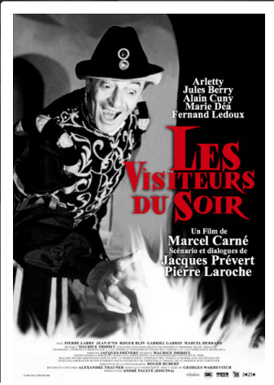
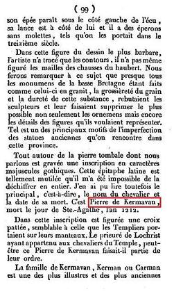
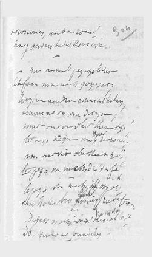
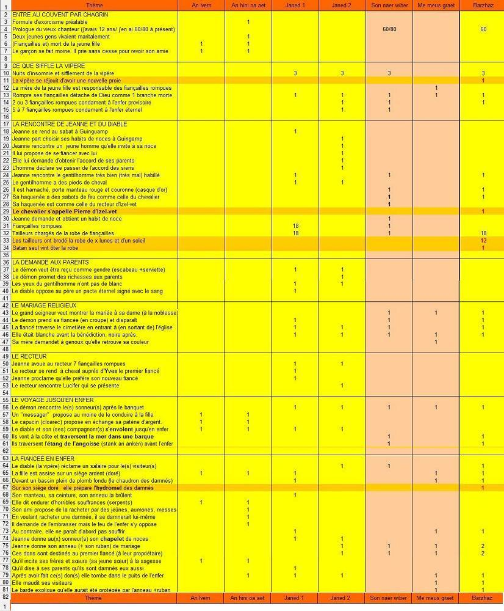

La Fiancée de Satan
Satan's Bride
Dialecte de Léon (*)
|
Sa soeur Hélène Morvan, née Olivier, a chanté le Cantique des âmes . Anaïc est à l'origine de neuf chants qui ont tous trait à l'amour, aux fiançailles ou au mariage, dont le dernier, qui figure dans le premier carnet de collecte, n'apparaît pas dans le Barzhaz, bien qu'il soit fort beau. Ces chants appartiennent tous à un répertoire courant en Basse Cornouaille: La fiancée de Satan , La fête de Juin , La rupture , Hollaïka , La demande en mariage , La ceinture , Le chant de table . La croix du chemin . L'adieu à la jeunesse , Il est intéressant de noter que le hameau de Kerigazul en Nizon, où demeurait également Annaïk le Breton a fourni à lui seul 15 chants, soit plus du tiers de ceux mentionnés dans les tables. Cependant dans l'argument de l'édition de 1845 (Tome I, p. 261), l'auteur écrit: "J'ai recueilli [ces vers] de la bouche d'un paysan poète Loeïz Guivar, ou Louis Guivarc'h dont j'ai parlé dans l'introduction de ce recueil" (ce personnage qu'il appelle aussi "Loeiz Kamm", Louis le Boiteux, est l'auteur de "Ur gentel vat" , qui se chante sur la même mélodie). Aucune indication d'informateur ne figure dans la première édition, celle de 1839! "Son an naer-wiber" , la chanson de la vipère, pp.195-1, 195-2, 196-1, et 211-2 (prologue et variante) "Me 'm-eus graet daou-tri dimezi" (incipit), Je me suis fiancée deux ou trois fois: pp. 196-1, 196-2, 211-1. - On le trouve 6 fois dans les manuscrits de Penguern : t.89 "Ar godiserez" , La railleuse, (recueilli à Henvic, publié en 1851 dans le périodique "Gwerin" N°5); t.90 (idem); t.90 "An ivern" (l'enfer); t.91 "Merc'hed yaouank er gwirionez" et "An naer-wiber" ; t.95 "Ar godiserez". - En recueil , il figure aussi trois fois chez Luzel , dans le tome 1 des "Gwerzioù" (1867), sous le titre de "Janed Ar Wern" , deux versions recueillies respectivement à Plouaret et Loquivi-Plougras et sous le titre de "An hini oa aet da weled e vestrez d'an ivern" , recueilli à Plouaret. - En périodique , sous le même titre, on trouve une version trégoroise et un extrait d'une version cornouaillaise publiée chez le Chanoine Pérennès dans les "Annales de Bretagne", tome 45, 1938. - Ce chant a été également publié dans "La paroisse bretonne de Paris" par l'abbé F. Cadic , en décembre 1907 sous le titre "Janed En Tremarec" , recueilli à Noyal-Pontivy. (*) L'informateur, qu'il soit Anaïc Olivier ou Loeiz Guivar, parle cornouaillais. C'est sans doute la mention d'Izelvet en Plonévez-Lochrist situant l'action en Léon, qui a conduit La Villemarqué à opter pour le Léonais . |
 |
Her sister Hélène Morvan, née Olivier, sang the Hymn of All Souls . Anaïc contributed no less than nine songs all of them relating to love, betrothal or marriage, the last of them, though recorded in the first collecting book, was not printed out in the Barzhaz in spite of its merits. All of this songs are popular in Lower Cornouaille: Satan's Bride, The Feast of JUne , Breaking Off , Hollaïka , Wooing , The Girth , The Table Song . The Cross by the Wayside . Farewell to Youth , It is remarkable that the hamlet Kerigazul near Nizon, where Annaïk le Breton also dwellt, should have concealed a hoard of 15 songs, over two thirds of the items listed in the tables. However, in the 1845 edition (Book I, p. 261), the author states in the "argument": "I learnt this song from the singing of a peasant-poet Loeïz Guivar addressed in the introduction to this book" (this informer whom he also dubs "Loeiz Kamm", Lame Louis, was the composer of "Ur gentel vat" , sung to the same tune). No information as to the source is given in the first edition (1839)! "Son an naer-wiber" , Song of the viper, pp.195-1, 195-2, 196-1, and 211-2 (prologue and variant) "Me 'm-eus graet daou-tri dimezi" (incipit), I was betrothed two or three times: pp. 196-1, 196-2, 211-1. - There are no less than 6 versions of it in the de Penguern MSs : book 89 "Ar godiserez" , The mocking girl, (collected in Henvic, published in 1851 in the journal "Gwerin" N°5); b.90 (idem); t.90 "An ivern" (In hell); t.91 "Merc'hed yaouank er gwirionez " and "An naer-wiber" ; b.95 "Ar godiserez". - There are also three instances of this song in a collection , Luzel 's 1st book of the "Gwerzioù" (1867), as "Janed Ar Wern" , two versions collected respectively at Plouaret and Loquivi-Plougras; and as "An hini oa aet da weled e vestrez d'an ivern" , collected at Plouaret. - In periodicals , we find under the same title, a Tregor dialect and excerpts of a Cornouaille dialect ballad published by Canon Henri Pérennès in "Annales de Bretagne", Book 45, 1938. - It was also published in "La Paroisse Bretonne de Paris" by F. Cadic, in December 1907, under the title "Janed En Tremarec" , gathered at Noyal-Pontivy. (*) Whether the informer was Anaïc Olivier or Loeiz Guivar, he spoke Cornouaille dialect . The mention, in one of his sources, of Izelvet near Plonévez-Lochrist locates the plot in Léon, which prompted La Villemarqué to opt for the Léon dialect . |
Ton
(Mode phrygien)
| Français | English |
|---|---|
|
1. Venez, venez, petits et grands, Du barde errant ouïr les chants. 2. J'ai composé ce chant nouveau, Approchez donc vite, il le faut! 3. A l'époque de mes récits Je n'avais pas douze ans finis. 4. Je n'avais pas encor douze ans Et j'en ai soixante à présent. 5. Vienne m'entendre qui veut bien Ouïr un barde qui vient de loin. 6. Venez m'entendre sans tarder, Avant que je m'en sois allé. II 7. Trois nuits que je n'ai fermé l'œil Ce soir non plus, point de sommeil. 8. Car j'entends siffler la vipère, Siffler au bord de la rivière. 9. Et c'est un sifflement de joie: - Encore une qui fut ma proie! 10. En tout, quatre en cette contrée, Dont nulle ne fut enterrée! - 11. Ce jour-là, devaient se marier Deux jeunes gens de qualité. 12. Par dix-huit tailleurs fut taillée La robe de la mariée. 13. Ils avaient brodé dans leurs toiles Un soleil avec douze étoiles, 14. Douze étoiles et le soleil Et la lune: un art sans pareil. 15. Dix-huit tailleurs pour la vêtir: Satan seul vint la dévêtir. 16. Une fois la messe finie, Par le placitre elle est partie. 17. A son entrée dans la chapelle Comme le lis elle était belle. 18. Lorsqu'elle en repassa le seuil, On eût dit qu'elle était en deuil. 19. Un grand seigneur est arrivé, Cuirassé de la tête aux pieds, 20. Et son manteau rouge d'abord, Et, sur sa tête, un casque d'or 21. Ne laissent voir de son visage Que des yeux aux reflets d'orage. 22. Le cheval saxon qu'il conduit. Est aussi sombre que la nuit. 23. Ses sabots font jaillir le feu Comme celui du malheureux 24. Chevalier Pierre d'Izelvet (De l'enfer soit-il préservé!) 25. - A moi, pour que je la conduise Chez les miens, la jeune promise! 26. Il faut qu'ils la voient à l'instant. Je reviendrai dans un moment. - 27. On patienta: peine perdue! Elle n'est jamais revenue. III 28. Lorsque l'orchestre repartit De la fête, tard dans la nuit, 29. Le majestueux seigneur l'arrête: - Comment était donc cette fête? 30. - On a dansé tant qu'on a pu, Mais la mariée ne revient plus. 31. - Que diriez-vous de la revoir? Le chemin, je crois le savoir. - 32. Heureux de la voir? Je crois bien, Tant qu'il ne nous arrive rien! - 33. Chacun, à peine a-t-il parlé, Sur le rivage est transporté. 34. Une barque là les attend Et ils franchissent l'océan, 35. Le Lac de l'Angoisse et des Morts: De l'Enfer ils viennent aux bords. 36. - Les sonneurs de vos noces sont Venus vous voir, regardez donc! 37. Que donner à ces braves, dites, Qui viennent vous rendre visite? 38. - Voici mon ruban de mariage: A le prendre je vous engage. 39. Prenez mon anneau d'or aussi: Emportez-le chez mon mari! 40. Dites-lui qu'il ne pleure point: Je suis sans désir ni chagrin. 41. Ces biens lui reviennent de droit, Veuf le jour qu'il se maria. 42. Et moi, sur un siège doré, Je fais l'hydromel des damnés. -. IV 43. A peine avaient-ils fait un pas, Que cette clameur s'éleva: 44. - Maudits soient ces ménétriers, Car je suis prise à tout jamais! - 45. Eut-elle gardé son ruban Et l'anneau d'or du sacrement, 46. L'anneau béni l'eût protégée Du puits d'enfer il l'eût sauvée. V 47. Quiconque est fiancé trois fois, Et pourtant ne se marie pas, Brûle en enfer: telle est la loi. 48. Séparé du Ciel aussi loin Que feuille morte du raisin. 49. Séparé du Ciel comme l'est De l'arbre le rameau coupé. Traduction: Christian Souchon (c) 2008 |
1. Let the wandering bard sing for you All, young and old, this new song, too 2. I have made for you this new song, Come listen to it, old and young! 3. When of these things I have been told I was not yet thirteen years old. 4. I was a child, in my twelfth year. It's a sixty old man who's here. 5. Listen to me whoever wants To hear one who knows many lands. 6. Hurry up, listen intently. For I shall be away quickly. II 7. I did not get, for three nights past, A wink of sleep and it shall last, 8. Because of the hissing viper Here on the bank of the river. 9. Proclaiming in its hissing tone: - Now I have got another one! 10. I got four of them in this town Who were not buried in the ground. 11. Two young people of the gentry, Who had got engaged to marry. 12. Eighteen tailors that had come round To arrange the bride's wedding gown. 13. To adorn the gown of the bride With about six stars on each side, 14. Beside the stars embroidered, The sun and the moon were painted. 15. Eighteen tailors needed to dress Her, whom Satan alone undressed. 16. After the wedding mass was said, Back to the churchyard she repaired. 17. When she had entered the church hall She was, a lily, blooming all. 18. But on going out again, Like a turtledove weak and faint. 19. A high lord in all his finery And armour-clad entirely, 20. With a gold helmet on his head A red cape o'er his shoulders spread, 21. Turned up. His eyes like sparkling flame Burning inside the iron frame. 22. And he rode a Saxon palfrey, As midnight sky, dark and eerie, 23. Whose shoes threw out sparks in the night As does the horse of the lord knight, 24. The Lord Peter of Izelvet (God forgive him the sins he did!) 25. - Give me the bride: You must give in. I'll show her to my kith and kin. 26. To show them the bride you give me I promise you soon back to be.- 27. They waited and waited in vain, The bride never has come again. III 28. When the pipers from the wedding Late in the night were returning, 29. The stately lord has come their way: - Did you at the feast soundly play? 30. - We treated pretty well our host, But we're afraid the bride is lost. 31. - What don't you say! You lost the bride? Want to see where she's gone to hide? 32. - That surely would soothe our alarm Provided we suffer no harm. - 33. They had no time for saying more As they found themselves off the shore. 34. Sailing on a little galleon And soon they had crossed the ocean, 35. Left the Scare and Bones Lake behind Until Hell's entrance they did find. 36. - The pipers of your wedding feast To visit you came from the East. 37. They are brave. You should repay them For the trouble they have taken. 38. - Now, here is my wedding ribbon. If you want, you give it to them. 39. Here is the ring of my wedding. Take it to my husband's dwelling. 40. You shall tell him: "You should not cry: She feels no harm and no desire!" 41. For my husband take it away, Married and widowed the same day. 42. Look: I sit on a golden chair. Mead for the damned I prepare. - IV 43. They were about to repair Home, when a scream has rent the air: 44. - Accursed pipers! Look what you made! - The well of Hell shut o'er her head. 45. If her ribbon, above all thing, She had kept, with her golden ring, 46. With the ring that the priest had blessed The grievance would have been redressed. V 47. Whoever was three times engaged And, as many times disengaged, Has God's wrath in hell assuaged. 48. And from paradise he will be As far as dead leaves from the tree, 49. As the picked rose from the bud, As far from the garden of God. Transl. Ch.Souchon (c) 2008 |
Texte breton
To Breton text

|
Résumé
Où il est question d'une jeune femme enlevée le jour de ses noces par un grand seigneur en armure, portant couronne d'or et chevauchant un cheval noir. La fête terminée sans la mariée, le seigneur revient et les ménétriers acceptent qu'il les conduise à elle, s'il ne leur arrive aucun mal. Ils traversent en barque le lac de l'Angoisse et des Ossements (Lenn an Anken hag an Eskern) et parviennent au gouffre de l'enfer où la jeune mariée, assise sur une chaise dorée apprête de l'hydromel pour les damnés. Cédant à la demande du diable, elle remet à ses visiteurs son ruban de noces et son anneau nuptial. Elle perd ainsi la protection de ces symboles bénis et aussitôt, le puits de l'enfer est sur sa tête. Cette jeune fille avait commis la faute de se fiancer trois fois. Or, "An neb a ra tri dimezi, Tri dimezi heb eurediñ, Ez a d'an ivern da loskiñ." "Quiconque se fiance 3 fois, 3 fois sans se marier, s'en ira brûler en enfer." On sait que les fiançailles étaient accompagnées d'un cérémonial compliqué où un rôle important était dévolu à l' entremetteur . Les considérations économiques (jonctions de patrimoines, dots...) dans un monde essentiellement rural, expliquent sans doute qu'on y voyait un engagement grave qu'il ne convenait pas de rompre à la légère. Des références mythologiques imposantes Dans l'argument et les notes qui accompagnent ce chant, La Villemarqué cite des passages de l'historien grec Procope (mort en 562) et de Claudien, poète latin du 4ème ou 5ème siècle, où l'Armorique, semble-t-il, est décrite comme un lieu d'embarquement - les gens du cru servant de nautoniers - ou d'envol vers le séjour des morts. De même dans la chanson de geste "Guillaume au court nez", des fées se proposent de mener à Audierne ou en un lieu portant le nom breton de Lokifern (Lieu d'Enfer), un chevalier qui, à la recherche de son fils, s'endort dans une barque. Et il est de fait que la toponymie des côtes bretonnes renferme une "Baie des Trépassés" et d'autres noms sinistres, qui montrent que ce chant est en rapport avec un ensemble de croyances ancrées dans la tradition depuis longtemps. La Villemarqué croit en outre pouvoir établir un lien entre ce chant et certains textes gallois cités par William Owen Pughe et par la fameuse "Myvyrian Archaeology of Wales" où il est question de trois cercles que l'âme doit parcourir: celui de l'infini , celui de l'épreuve et celui de la béatitude, dont les étangs de l'Angoisse et des Ossements, les Vallées du Sang et la Mer au delà de laquelle s'ouvre l'abîme évoqués ici et dans le chant Le Baron de Jaouioz seraient les équivalents bretons. Il remarque aussi, sans doute avec raison, l'influence d'autres sources, qui apparentent cette jeune fille chargée de préparer l'hydromel pour les défunts aux Walkyries du panthéon nordique. Si ses arguments sont, jusqu'ici, assez convaincants, on est en droit de contester sa datation du morceau: Sous prétexte que le chant parle de Pierre, seigneur d'Izelvet qui a un cheval "saxon" comparable à celui du diable, La Villemarqué date le chant du 13ème siècle, car il a connaissance d'une pierre tombale, celle d'Alain de Villemavan (ou Kermavan), dans la chapelle de Lochrist-an-Izelvet à Plounevez-Lochrist qui porte la date du 15 février 1253! Chants similaires recueillis par d'autres collecteurs F-M. Luzel a recueilli deux chant sur un sujet similaire: - Janed Ar Wern (Jeanne Le Guern) qui met lui aussi en garde contre les fiançailles à répétition, et contient des emprunts à la démonologie du Père Maunoir's (le pied de cheval, le blanc de l'œil...) et un pacte avec le diable qui fait penser au Docteur Faust. Luzel en a collecté deux versions: - "Celui qui alla voir sa maîtresse en enfer" , pour lequel le musicien Maurice Duhamel a collecté (entre 1902 et 1912) 4 mélodies différentes: La Villemarqué lui-même avait recueilli une version similaire mais plus courte de huit distiques du même chant: Outre une condamnation du flirt et de la vie en ménage avant le mariage (la vie en ménage peut être un enfer, même après le mariage!), on y trouve exprimée l'idée que Cette conception se rencontre déjà dans l'"Edda poétique" (Cf. Helgi et Sigrune) et dans un chant recueilli par Luzel, La jeune fille et l'âme de sa mère . Dans la première strophe, le chanteur, qui s'apprête à parler d'enfer et du diable, demande la protection de la Sainte Vierge! - Chez J.M. de Penguern , on trouve, outre une version intitulée "La railleuse", un chant similaire, dont le titre est simplement: - Dans le chant vannetais publié par l' Abbé F. Cadic , dans le N° de décembre 1907 de la "Paroisse bretonne de Paris", on voit le nom de "Marec" , qui intriguera tant La Villemarqué, comme il est dit plus loin, apparaître en composition (avec "tre", la "trêve", le canton). C'est celui de l'héroïne, Jeannette, et de son cousin, venu sonner de la cornemuse à ses noces et qui lui rend visite en enfer. Jeannette n'a, semble-t-il, commis aucune faute grave, si ce n'est se faire enlever par le diable, portant chapeau blanc et cuirasse, le jour de son mariage. Il grandit à vue d'œil durant la cérémonie puis l'emporte sur son cheval. En enfer elle est Le renard et les poules Tous ces chants sont prompts à envoyer en enfer les filles, et non les garçons. En revanche des proverbes montrent qu'on regardait généralement avec bienveillance les garçons coureurs de filles. Telle était la nature des hommes. Aux filles de se méfier. Ainsi, un proverbe de Châteaulin met-il cette phrase dans la bouche de la mère de garçons: An neb e-neus yer, o zapa kloz, Rak me' losko va louarn koz. Da glask e damm, pa zeuy an noz. (Qui a des poules les tienne enfermées, Car je lâcherai mon vieux renard, A la recherche de sa pitance, Quand viendra la nuit). Source: "Bretagne, almanach de la mémoire et des coutumes" Hachette. Tu es Petrus et super hanc petram aedificabo theoriam meam  Le tableau ci-après recense les quelque 65 thèmes et figures que l'on peut distinguer dans ces diverses versions de la "Fiancée en enfer": "An ivern" de la collection de Penguern, "An hini a oa aet" et les deux "Janedik" de Luzel, les deux chants consignés dans le cahier de Keransquer "Son an naer wiber" (La vipère) et "Me 'm-eus graet" (Je me suis fiancée...) ainsi que la "Fiancée de Satan" du Barzhaz. On a teinté en jaune foncé les cinq éléments qui, ne se trouvant que dans cette dernière version, doivent être mis sur le compte de l'imagination du jeune barde. Il convient de s'attarder sur deux d'entre eux:Vel dan ini nautrou marek nautrou person an izelvet" une phrase peu claire signifiant: "Il avait un coursier... Comme celui de Monsieur Marec, Monsieur le recteur d'Izelvet " "Nautrou marek" pourrait aussi se lire "An Aotroù marc'hek" (le seigneur chevalier), mais la phrase serait bancale, outre que les autres leçons font explicitement jouer un rôle actif au recteur et même à son cheval et que la version vannetaise du chant appelle "Tremarec" les deux protagonistes. Il apparaît que La Villemarqué a lu au lieu de " person an Izelvet" (curé d'Izelvet), " piar an Izelvet" "Pierre d'Izelvet". Le spécimen d'écriture ci-contre montre qu'il devait avoir du mal à se relire. Il s'est mis en quête d'un personnage historique de ce nom et a découvert dans les "Antiquités de la Bretagne" , volume 1 consacré au Finistère publié en 1832, aux pages 98 et 99, la description faite par le Chevalier de Fréminville du Prieuré de Lochrist-an-Izelvet à Plounévez-Lochrist: « Je trouvai dans le chœur de l'église de Lochrist, du côté de l'évangile, une tombe plate très ancienne et extrêmement curieuse. On y voit la figure gravée en creux d’un chevalier du treizième siècle, armé de pied en cap... Tout autour de la pierre tombale... est une inscription en caractères majuscules gothiques. Cette épitaphe latine est tellement mutilée qu’il m'a été impossible de la déchiffrer en entier. J'en ai pu lire toutefois le principal, c’est-à-dire, le nom du chevalier et la date de sa mort. C’est Pierre de Kermavan, mort le jour de la Sainte Agathe, l’an 1212." Dans les éditions de 1837 et 1845, La Villemarqué reprend l'essentiel de cette description précédée des mots "J'ai vu"! Il estime à une quarantaine d'années le délai au cours duquel l'auteur du chant pouvait citer le chevalier en exemple à ses auditeurs sans risquer de ne pas être compris. Voilà ce qui lui permet d'affirmer que la ballade "doit avoir été composée de 1212 à 1250" . Mais en 1859, l'historien Pol de Courcy , publie dans son "Itinéraire de Saint Pol à Brest", page 112, une description de la tombe plate, en tout point conforme à la précédente, si ce n'est que l'inscription est, selon lui: "Hic jacet Alanus de Villamavan , m.... die festi bea ... anno dni MCCLIII. Requiescat in pace." Et il ajoute: "Cette version diffère beaucoup de celle donnée en 1832 par M. de Fréminville, mais nous croyons pouvoir affirmer que la nôtre est meilleure." Cette lecture est confirmée dans l'"Inventaire général du patrimoine culturel", dressé en 1987: "Hic jacet Alanus de Villamava usque diem re(surrectionis). Dec(essit) die mer(coris) post festam Sanctae Agatae Virginis anno d(omi)ni MCCLIII..." soit, en français: "Ici repose Alain de Kermavan (ou de Carman) jusqu'au jour de sa résurrection. Il mourut le mercredi suivant la fête de Sainte Agathe, vierge, en l'an du Seigneur 1253." Dans l'édition 1867 du Barzhaz, l'inscription funéraire devient, dans les "notes" qui suivent le chant: Hic jacet Alanus de Villamava... Anno Dom MCCLIII Pierre de Kermavan est remplacé désormais par Alain de Kermavan [ou de Carman]. Toutefois, ajoute l'auteur, "il y a lieu de penser que la ballade fait allusion à lui, mais en l'appelant Pierre, elle change son nom de baptème" . Dans le poème breton le "Piar an Izel-vet" de 1839 devient "Piar Izel-vet" et dans la traduction française "Pierre d'Izelvet" cède la place à "Pierre qui est à Izel-vet". S'il s'obstine ainsi à maintenir dans son texte ce personnage chimérique, c'est que celui-ci lui semble un gage d'ancienneté et lui permet d'invoquer des autorités plus vénérables encore: Procope, Claudien et les anciens druides! La chapelle de Lochrist d'Izelvet est le sujet d'une gwerz du même nom . Les auteurs des gwerzioù La première partie de la pièce (strophes 1 à 6) nous informe sur la personnalité de l'auteur: il s'agit d'un "barzh-baleer", un "barde voyageur", entendez un "vagabond", qui raconte des faits vieux de 48 ans. Ces précisions ne doivent rien à l'imagination du collecteur. Elles existent dans le 1er manuscrit où elles constituent un prologue introductif noté transversalement dans la marge inférieure de la page 211. Par ailleurs, La Villemarqué décrit de façon saisissante le processus de création collective d'une gwerz dans l'introduction générale du Barzhaz (pp.XXXVII et XXXVIII de l'édition 1867: (cf. Introduction , IV, "Etat actuel...", 9, 10, 11). Le chant An amzer dremenet en constitue l'illustration sans doute enjolivée. Le lieu privilégié pour de telles créations était la veillée, ce dont atteste dès le XVIème siècle une page célèbre de Noël du Fail (1520-1591) tirée de ses "Propos rustiques de Maître Léon Ladulfi". Cette possibilité n'empêchait pas que tel ou tel rimeur talentueux soit considéré comme plus particulièrement l'auteur, voire l'auteur unique de certains autres chants. Dans plusieurs pièces du Barzhaz ou du 1er carnet de Keransquer, ce compositeur anonyme se présente comme ici: - dans An droug-hirnez , un meunier de La Feuillée devenu matelot , - dans Ur gentel vad , un fermier nommé Louis le Boiteux, - dans A-enep d'an danserien , un paysan de Landerneau; - dans Al leur nevez , un tailleur aidé d'un jeune homme du manoir pour l'écriture; - dans Ar resin laeret , des maçons de Nizon; - enfin le chant Ened Rosporden dont une version est revendiquée par le barde aveugle Yan Ar Güen, Jean Le Guen, autre poète populaire qui avait fait de cette activité son métier. Les notes de terrain de La Villemarqué comportent d'autres éléments biographiques plus détaillés sur ces auteurs. . Cependant, beaucoup de ces chants par leur style et leur tenue littéraire montrent qu'ils étaient souvent un mode d'expression partagé entre le peuple illettré et l'élite rurale, roturière, noble ou ecclésiastique et que s'y exprimait une sensibilité commune. C'est ainsi que beaucoup de chansons sentimentales sont dues à des clercs, c'est à dire des fils de paysans aisés ayant une formation littéraire plus ou moins développée. |
Résumé
It's about a girl who was abducted on her wedding day by a great lord in full armour, wearing a gold crown and riding a black horse. Once the celebration was completed without the bride, the lord returned and the pipers agreed to be led by him to her, provided that no harm should occur to them . They cross in a punt the Lake of Anguish and Bones (Lenn an Anken hag an Eskern), come to the chasm of hell and see the bride, sitting on a golden chair, who mingles mead for the damned. At the devil's request, she gives her visitors her wedding ribbon and her wedding ring. She is thus deprived of the protection of these sacred symbols and the next moment, the abyss of hell closes on her head. This girl was at fault for having been engaged three times:now, "An neb a ra tri dimezi, Tri dimezi heb eurediñ, Ez a d'an ivern da loskiñ." "Whoever was engaged thrice, Thrice engaged and didn't marry, Shall go to hell, there to be burnt." It is well known that engagements were accompanied by an intricate ceremonial where an important part was played by the go-between, the so-called ' bazvalan . Economical considerations (merging of estates, dowry...) justified, very likely the severity with which thoughtless breaches of promise were condemned in these chiefly rural surroundings. An imposing mythological background In the argument and the notes appended to this song, La Villemarqué quotes excerpts from the Greek historian Procopius (who died in 562) and the last Latin poet Claudian (4th/5th century), who depict Armorica as the boarding place for voyagers repairing to the abode of the dead. Similarly the "chanson de geste" Guillaume au Court Nez (Short-nosed William) reports that fairies consider taking to Audierne or to a town with the Breton name "Lokifern" (Hell's Place) a knight who, while in search for his son, went to sleep in a barge. A "Bay of the Dead" (Baie des Trépassés) and some other lugubrious names are to be found among the Breton place names, demonstrating the link between this song and a body of deeply rooted beliefs. According to La Villemarqué, the present song is also connected to the Welsh poems quoted by William Owen Pughe or included in the famous "Myvyrian Archaeology of Wales" , mentioning the Three circles the deceased must cross: Infinitude, Ordeal and Beatitude, which he assumes to be matched by the Lakes of Anguish and Bones, the Blood Valleys and the Sea opening on the Abyss addressed in this song and in Le Baron de Jaouioz . He may be right in assuming other sources of influence that made of this girl who mingles mead for the damned a relative to the Valkyries in the Nordic pantheon. Far less convincing is his dating of this poem: Since the song mentions a certain knight Peter, Lord of Izelvet, whose "Saxon" horse is similar to the devil's charger, La Villemarqué dates the song to the 13th century, as the Chapel Lochrist-an-Izelvet at Plonevez-Lochrist harbours the tombstone of Alan Of Kermavan bearing the inscription "12th February 1253"! Similar songs recorded by other collectors F-M. Luzel included in his collection two songs where similar points are at issue: - Janed Ar Wern (Joan Le Guern) conveying the same warning against multiple engagement, with elements borrowed from Father Maunoir's demonology (horse foot, the white of the eye...) and a pact with the devil that reminds of Doctor Faust. Luzel collected two versions: - "The one who went to Hell to see his mistress" . The musician Maurice Duhamel gathered (between 1902 and 1912) four different tunes to match it: La Villemarqué also had collected a similar version of this song which is shorter by 8 distiches: Beside a condemnation of flirtation and unmarried common life (but married life also may be absolute hell!), we find in this piece the conception that This assertion is also found in the "Poetic Edda" (See Helgi and Sigrun) and in a song collected by Luzel, The girl and her mother's soul .. In the first verse the protection of the Holy Virgin is called on the singer who is about to tell of Hell and devil! - In J.M. de Penguern 's song collection, we find, beside a version that goes under the title "The scoffing girl", a similar song, soberly titled - In the Vannes dialect song published by the Reverend F. Cadic , in the December 1907 release of the "Paroisse bretonne de Paris", we encounter the name "Marec" , that was to puzzle so much La Villemarqué, as stated hereafter, combined with "Tre" (shire). This is the name of the heroine, Jenny, and of her cousin, who officiated as piper on her wedding party, and will visit her in hell. Jenny did apparently commit no fault, except that she was abducted by the devil, who wore a white hat and an iron cuirass, on her wedding day. The latter got taller every time she looked at him during the ceremony, then he eloped with her on horseback. In hell she is Fox and hens All these songs readily send to hell women and no men. On the other hand, many sayings prove that womanizers were looked upon, as a rule, with benevolence. Such is, once and for all, male nature. Up to women to stay on their guard. Thus a saying from the Châteaulin area puts these words in the mouth of a mother of boys: An neb e-neus yer, o zapa kloz! Rak me' losko va louarn koz Da glask e damm, pa zeuy an noz. (Whoever has hens keep them shut up! Cause at the close of the day I'll be releasing my old fox, In search of a bit to eat.) Source: "Bretagne, almanach de la mémoire et des coutumes" Hachette Tu es Petrus et super hanc petram aedificabo theoriam meam  The table hereafter lists the ca 65 themes and figures that may be identified in different versions of the "Bride in Hell", namely: "An Ivern" in the Penguern collection, "An hini a oa aet..." and the two "Janediks" in Luzel's books, the two songs recorded in the Keransquer MS: "Son an naer wiber" (The song of the Adder) and "Me 'm-eus graet..." (I was betrothed...), as well as "Satan's Bride" in the Barzhaz. Marked in dark yellow are the 5 elements that are found only in the latter version and therefore ascribable to the young Bard's imagination. Two of them are worth pondering on:"Ha gantañ un inkane red... Vel dan ini nautrou marek nautrou person an izelvet" which is anything but clear: "He had a steed... like the one of Mister Marec, The reverend parson of Izelvet " But "Nautrou marek" might also read as "An Aotroù marc'hek" (the Lord knight), though it would make the sentence unbalanced. Besides, the other versions impart the parson and his horse an instrumental role in the story and the Vannes version names "Tremarec" the two protagonists. It appears that La Villemarqué read and printed " Piar an Izelvet" (Peter of Izelvet) instead of " person an Izelvet" (parson of Izelvet). The sample opposite shows that he didn't write a good hand and could easily be confused about his own writing. He rushed in search of a relevant historical character and discovered in the "Antiquities of Brittany" , book I, dedicated to the département Finistère, published in 1832, on pp. 98 and 99, a description made by Chevalier de Fréminville , of the Lochrist-an-Izelvet Priory at Plounevez-Lochrist: "I found in the choir of Lochrist church, on the Gospel side, a very old and extremely interesting stone slab. Engraved in it was the hollow picture of a thirteen century knight, armed from head to feet. All around the tombstone there was an inscription in Gothic capital letters. It was so mutilated that I found it impossible to decipher the whole of it. I could, however, read the most important part: the name of the knight and the date of his death. Peter of Kermavan who died on Saint Agatha's day in 1212 ". In the 1837 and 1845 editions La Villemarqué copies most of this description, preceded by the words "I saw"! At a rough estimate, the bard could use the knight's name to make a comparison understandable to his audience, at the latest forty years after his death. That allowed La Villemarqué to write that the ballad "Should have been written between 1212 and 1250" . But in 1859, the historian Pol de Courcy , published in his "Itinerary from Saint-Pol to Brest", on page 112, a description of the tombstone which does altogether conform with the foregoing, but for the inscription that should read, in his opinion: "Hic jacet Alanus de Villamavan , m... die festi bea... anno Dni MCCLIII. Requiescat in pace" And he adds; "This version differs very much from M. de Fréminville's reading, in 1832, but I take it for granted that mine is better." And really, his reading was confirmed by the "General survey of the Cultural Heritage" in 1987: "Hic jacet Alanus de Villamava usque diem re(surrectionis). Dec(essit) die mer(coris) post festam Sanctae Agatae Virginis anno d(omi)ni MCCLIII..." or, in plain English, "Here rests in God Alan of Kermavan (or Carman) till the day of his resurrection. He died on the Wednesday following Saint Agatha's day in the year of the Lord 1253." In the 1867 edition of the Barzhaz we read in the "notes": "Hic jacet Alanus de Villamavan... Anno Dom. MCCLIII" Peter of Kermavan becomes henceforth Alan of Kermavan! [or Carman]. However, so writes the Bard, "we have reasons to believe that the ballad hints at him, but his name was changed to Peter, for some reason or other." In the Breton poem "Piar an Izel-vet" (1839 edition) becomes "Piar Izel-vet" and, in the French translation, "Pierre d'Izelvet" yields to "Pierre qui est à Izelvet" (Peter who lies at Izelvet). If he maintains with such obstinacy this chimerical character in his text, it is because he considers him a proof of antiquity, enabling him to invoke still more venerable authorities: Procopius, Claudian and the druids of old! The chapel Lochrist an Izelvet is sung in a homonymous "gwerz" . The authors of the gwerzioù The first part of the present song (stanzas 1 to 6) mentions who the author is: a "barzh-baleer", a "traveling bard", i.e. a "vagabond", who tells 48 years old stories. These precisions did not arise from the imagination of the song collector. They exist in the 1st manuscript where they introduce a prologue noted transversely in the lower margin of page 211. In addition, Villemarqué describes in a striking way the process of collective creation of a gwerz in the general introduction of Barzhaz (pp. XXXVIII and XXXVIII of the 1867 edition: (See Introduction , IV, "Current Status ...", 9, 10, 11). The song An amzer dremenet is the undoubtedly embellished illustration of this process . The favorite place for such creations was the evening gathering by the hearth, as stated, as early as the 16th century, in a famous passage of Noël du Fail's (1520-1591) "Rustic Speeches of Master Leon Ladulfi". This possibility did not prevent that a certain talented rhymer could be considered more particularly the author, if not the sole author of some other songs. In several songs in the Barzhaz or in Keransquer's first book, this anonymous composer presents himself like here: - in An droug-hirnez , a former miller from La Feuillée who had become a sailor, - in Ur gentel vad , a farmer named "Lame Louis", - in A-enep of a danserien , a Landerneau farmer; - in Al ne nevez , a tailor whom the young manor's esquire helped with committing it to paper; - in Ar resin laeret , masons from Nizon; - finally the song Ened Rosporden of which a version is claimed by the blind bard Yan Ar Güen, Jean Le Guen, another popular poet who had made this activity his job. La Villemarqué's collecting records include other detailed biographical elements about these authors. . However, many of these songs, by their style and their literary outfit, show that they were often a mode of expression common to the illiterate people and the rural elite, including commoners, noblemen and clergymenl. In particular many love songs were composed by "clerics" (kloer), ie sons of wealthy peasants with more or less developed literary skills. |
.
